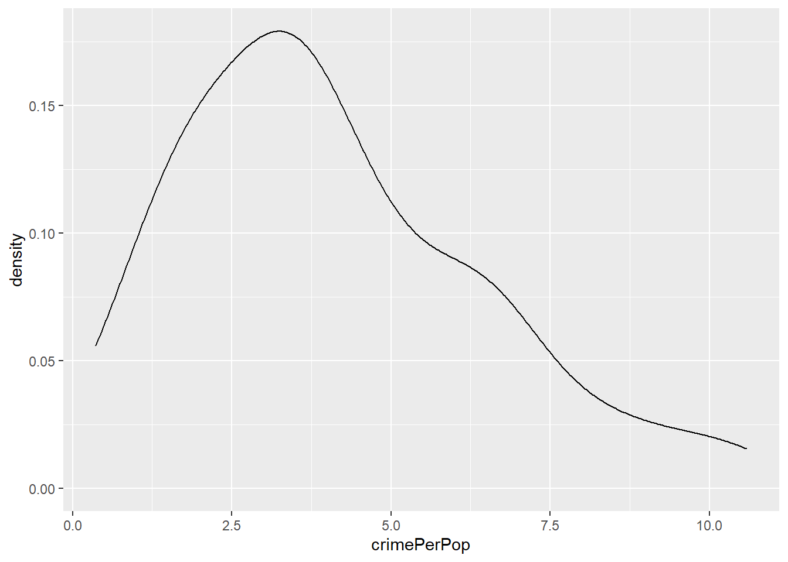

As mentioned in my previous post, we should continue with a parametric bootstrap simulation. In addition, in part II of this tutorial, I would like to demonstrate how to construct a “bootstrap likelihood” as an alternative to empirical likelihood.
Recall the parametric bootstrap resamples from the parametric distribution evaluated at the MLE estimates of the parameters:
\[f_{\hat \mu} \xrightarrow{iid} x^* \xrightarrow{t} \hat\theta^*\] where \(\hat \mu\) is the MLE estimate of the parameter \(\mu\).
library(tidyverse)
d <- carData::Freedman
d <-
d %>% rownames_to_column(var = "state") %>%
as_tibble() %>%
na.omit()
d <-
d %>%
mutate(
crimePerPop = crime / population)x <- d$crimePerPop # the sample datan <- length(x) # length of sample data
nb <- 4000 # number of bootstrap rounds
# level-alpha upper endpoint of
# perncentile interval
alpha = 0.025 The x is distributed like this:
ggplot(d, aes(x = crimePerPop)) +
geom_density() 
It does not look like a normal distribution, but let us fit it with normal distribution anyway.
Important: in parametric bootstrap, you calculate the MLE, and then generate bootstrap samples according to that estimate. It is a common mistake to confuse this approach with the nonparametric approach.
library(fitdistrplus)
# MLE estimate
( f <-
fitdist(x, "norm",
method = "mle",
control = list(maxit = 5000)) )Fitting of the distribution ' norm ' by maximum likelihood
Parameters:
estimate Std. Error
mean 4.064226 0.2345322
sd 2.345322 0.1658392boot_data <-
rnorm(nb, mean = f$estimate[1],
sd = f$estimate[2])This time, the statistics of interest are mean and variance, as opposed to a single statistics.
# mean() and sd() on multiple bootstrap samples
mean_star =
map_dbl(boot_data, mean)
sd_star =
map_dbl(boot_data, sd)Bootstrap likelihood
As opposed to estimating MAD in the last post, this time we have two parameters, and it complicates everything. If we are only interest in the mean, then variance is a nuisance parameter. Yes, we can still get the confidence intervals. However, what if we like to do more, for example to get the likelihood distribution of the mean despite having four or five other nuisance parameters?
The analytical way to handle it is to use profile loglikelihood. In a two parameter distribution such as normal distribution, this means treating one parameter as fixed, obtain the solution of the other parameter, and then vary the “fixed” parameter to find out the combination that produce the maximum likelihood.
The problem is that analytical solution is difficult to get for complex problems. One solution to this is the empirical or nonparametric likelihood. It can treat the whole shape of distribution as nuisance and still get a sensible likelihood of the mean. It turns out that BCa is a great way to construct such likelihood.
Recall that when \(B \to \infty\) the interval is exact if there exists a normalizing transform \(\phi=m(\theta)\) such that \[\frac{\hat \phi - \phi}{\sigma_{\phi}} \sim N(-z_{0}, 1) \] where \(\sigma_{\phi} = 1+a\phi\)
Recall also that for a standard normal distribution \[log L(\theta) = - \frac{n}{2s^2}(\bar x - \theta)^2\]. Because \(\hat\phi\) is normal, we know the likelihood is something like this: \[-log\sigma_{\phi} - \frac{(\hat\phi - \phi + z_0\sigma_{phi})}{2\sigma^2_{\phi}}\]
The BCa likelihood is defined as \[L_B(\theta):=L[\Phi^{-1}\{\hat G(\theta\)}] \] Recall \(z_0 = \Phi^{-1}\{\hat G (\hat \theta)\}\) is the bias correction term we encountered previously. \(L(\phi)\) will be calculated by plugging in \(z_0\). Notice that in the definition the \(\theta\) has no hat. This is simply saying that we will set up a grid of \(\theta\)’s and evaluate the likelihood at different possible \(\theta\) values. This is indeed what we want: calculating likelihood at all values of \(\theta\) (despite other nuisance parameters).
Notice the definition simply says: give me any (a grid of) \(\theta\), I will do a transformation \(\phi^{-1}[\hat G(\theta)]\) and evaluate the likelihood like a normal distribution with everything known (observed value is \(\hat theta\), variance is \(\sigma_{\phi}\), \(\theta\) is what we supply). The reason that we can regard the transformation as a exact normalizing transformation has been explained in the previous post. I’ll copy it there:
We have been talking about assuming a transformation exists. There is in fact a transformation that always exists (when some conditions are met): \[\phi = m(\theta) = \Phi^{-1}[\hat G (\theta)] \] where \(\hat G(\theta)\) is \(\# \{ \hat\theta^{*b} \leq \hat\theta \} / B\), the proportion of observations in the bootstrap sample that is less than \(\theta\). The reasoning is something like this: we know after transformtion \(m(\theta)\) is normally distributed, but \(\theta\) itself has some unknown distribution \(G()\) but we only get to see the bootstrap distribution of \(\hat G()\). If \(\hat \theta \sim G\), then by the probability integral tranform (Suppose that a random variable X has a continuous distribution for which the cumulative distribution function (CDF) is \(F_x\). Then the random variable Y defined as \[Y = F_x(X)\] has a standard uniform distribution) \(G(\hat theta)\) is standard uniform. Then, \(\Phi^{-1}[G(\hat\theta)]\) has to be a standard normal (this is in fact how we generate random normal samples in the computer!). Thus, \(\Phi^{-1}[G(\cdot)]\) is an exact normalizing transformation for \(\hat theta\).
Set up a grid (for bootstrap likelihood only )
# grid <- seq(min(vstar) + 1, max(vstar) - 1, length.out = nt)
# llplot$grid <- seq(min(vstar)+1 + max(vstar)-1, length.out = nt)For bootstrap likelihood
he likelihood is defined as the \(L[\phi^{-1}(\hat G(\theta))]\)
If we use pipe operator, it is theta %>% G_hat(G_hat means distribution based on bootstrap) %>% qnorm()
That is, a density function applied to a function similar to \(p_0\), which is to apply an inverse-normal function to the proportion of bootstrap MLE estimates that is less than MLE estimates from observed data.
But likelihood is defined on real theta, so that is to apply an inverse-normal function
to the proportion of bootstrap MLE estimates that is less than true theta(theta = parameter of interest). Note that this is based on a parameter value, so we use phi0, the MLE estimate of it, to estimate.
Note that phi0 is an observed number, but it also has an distribution. It happens that distribution of
(estimator that produce phi0) - (phi) / (1+a*phi) ~ N(- phi0, 1) –(1)
So this estimator is normal, and apply a density function is dnorm. When you do that to likelihood
theta %>% G_hat(G_hat means distribution based on bootstrap) %>% qnorm() %>% dnorm()
The last two steps are cancelled. What you get is the meaning of bootstrap likelihood.
You might wonder why (1) ~ Normal
i.e. why MLE from data %>% G_hat (bootstrap distribution) %>% qnorm is normally distributed
That is because it happens everytime when MLE from data %>% some function and that function is a normalizing transform. To see why it is, say MLE from data has a real distribution function G (not G_hat)
By probability integral theorem, G(MLE from data) ~ unif(0,1), and qnorm() applied to it gives you a standard normal
That is why we see a lot of qnorm applied a bootstrap distribution function.
# set.seed(7779779)
# nt <- nb / 5
# llplot <- tibble( ll = rep(0, nt), grid = rep(0,nt) ) # data frame to store estimates
#
# vstar_df <- tibble(`non` = rep(0, nb), `par` = rep(0, nb))# s = 1 + a * (phi - phi0)
# pmean <- -phi0 * s + phi
# ln <- dnorm(phi0, mean = pmean, sd = s) # size nt b/c pmean and s' size is nt
# lt <- ln / max(ln)
#
# llplot$lt_non <- lt # store likelihood estimate to the non-par column
# cat("max likelihood is for non-parametric is: ", max(ln),"\n")
#
# cat("The location",
# which.max(llplot$lt_non) ,
# "with highest likelihood for non-parametric: ",
# grid[which.max(llplot$lt_non)], "\n")
#
# cat("The CI for non-parametric is: ",
# CI_nonpar, "\n")
# llplot$lt_par <- lt
#
# cat("max likelihood is for parametric is: ",
# max(ln),"\n")
# cat("The location",
# which.max(llplot$lt_par),
# "with highest likelihood for parametric: ",
# grid[which.max(llplot$lt_par)], "\n")
#
# plot(llplot$grid, llplot$lt_non, type = "l",
# xlab = "bootstrap n", ylab = "likelihood",
# xlim = c(min(grid), max(grid) - 1 )) +
# lines(llplot$grid, llplot$lt_par, type = "l", col = "red")# data = rnorm(100,10,1)
# M = 5000; theta.propose = w = rep(0,M)
# for (i in 1:M){
# theta.propose[i] = runif(1,-10,30)
# el = el.test(data, mu = theta.propose[i])
# w[i] = exp(-0.5 * (el$'-2LLR'))
# }
# theta = sample(theta.propose, M , prob = w, replace = T)
# mean(theta); sd(theta) ;quantile(theta, probs = c(0.1,0.9))
# hist(theta, main = "", xlab = "theta")# x_star <- matrix(x_star, ncol = nb)
#
# for (i in 1:nt){
# phi[i] <- qnorm(sum(vstar < grid[i]) / nb)
# }
# phi0. But at every grid point, instead of only at observed value. This is approximation of the
# true distribution of "theta", i.e. whatever parameter we are interested in.
# Next we need to compute the a, which measures the rate of change of standard deviation. If the
# theta, i.e. the parameter we are interested in , is the mean, then a is calculated by skewness.